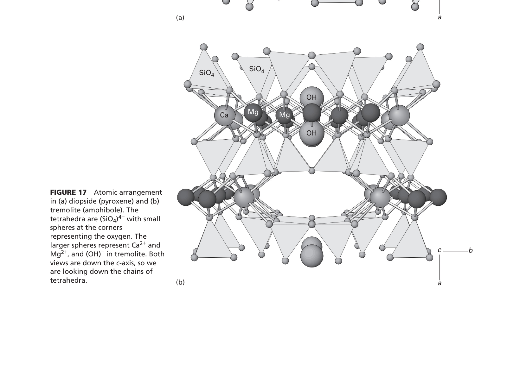
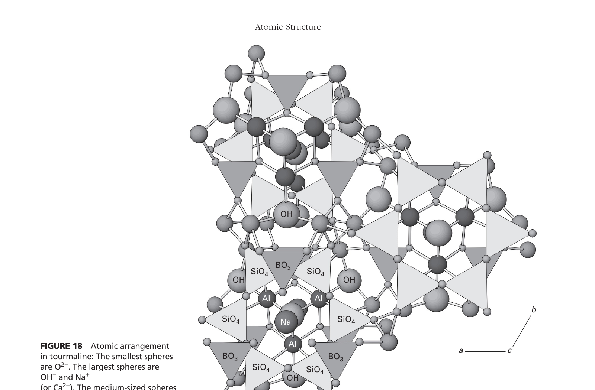

Chemical Formula: $\text{KMg}_3[\text{AlSi}_3\text{O}_{10}](\text{OH})_2$
Phlogopite is the magnesium-rich endmember of the mica group. Its crystal structure consists of continuous two-dimensional sheets of corner-sharing silica-alumina tetrahedra (t-o-t sandwiches) linked by interlayer potassium cations. Because it forms flexible hexagonal sheets with perfect basal cleavage $\{001\}$, it belongs unconditionally to the Phyllosilicates (Sheet silicates).
Chemical Formula: $\text{Mg}_2\text{Si}_2\text{O}_6$ (or $\text{MgSiO}_3$)
Enstatite is the magnesian endmember of the orthopyroxene group. Pyroxenes are characterized by single, unbranched chains of $[SiO_4]$ tetrahedra extending parallel to the $c$-crystallographic axis. Each tetrahedron shares exactly two oxygen atoms with its neighbors, giving a fundamental repeating ratio of $\text{Si}:\text{O} = 1:3$. Thus, enstatite is an Inosilicate single chain mineral.
Chemical Formula: $\text{Mg}_7\text{Si}_8\text{O}_{22}(\text{OH})_2$
Anthophyllite is an orthorhombic amphibole commonly found in metamorphosed ultramafic and mafic rocks. Amphiboles are constructed of double chains of tetrahedra created by cross-linking two pyroxene-like single chains. The repeat unit is $[Si_8O_{22}]^{12-}$, yielding diagnostic ~124° and 56° prismatic cleavage intersections. Anthophyllite is an Inosilicate double chain mineral.
Chemical Formula: $\text{Be}_3\text{Al}_2[\text{Si}_6\text{O}_{18}]$
Beryl (varieties include emerald and aquamarine) consists of rigid 6-membered rings of $[SiO_4]$ tetrahedra stacked along the $c$-axis, bound laterally by beryllium and aluminum cations. Rings formed of closed loops of tetrahedra define the Cyclosilicates (Ring silicates).
| Silicate Subclass | Structural Arrangement | Shared Oxygens per Tetrahedron | Si : O Ratio | Diagnostic Mineral Groups |
|---|---|---|---|---|
| Nesosilicates (Orthosilicates) | Isolated independent $[SiO_4]^{4-}$ tetrahedra | 0 | 1 : 4 ($[SiO_4]$) | Olivine, Garnet, Zircon, Al₂SiO₅ (Kyanite, Sillimanite, Andalusite) |
| Sorosilicates (Disilicates) | Double isolated tetrahedra pairs ($[Si_2O_7]^{6-}$) | 1 | 2 : 7 ($[Si_2O_7]$) | Epidote group, Zoisite, Hemimorphite |
| Cyclosilicates (Ring) | Closed rings of 3, 4, or 6 tetrahedra | 2 | 1 : 3 ($[Si_6O_{18}]$) | Beryl, Tourmaline, Cordierite, Benitoite |
| Inosilicates (Single chain) | Continuous single chains | 2 | 1 : 3 ($[Si_2O_6]$) | Pyroxene group (Enstatite, Diopside, Augite), Pyroxenoids |
| Inosilicates (Double chain) | Continuous double chains | Alternating 2 and 3 | 4 : 11 ($[Si_8O_{22}]$) | Amphibole group (Anthophyllite, Tremolite, Hornblende) |
| Phyllosilicates (Sheet) | Continuous 2D planar sheets (t-o-t or t-o) | 3 | 2 : 5 ($[Si_4O_{10}]$) | Mica group (Phlogopite, Muscovite, Biotite), Clays, Chlorite, Talc |
| Tectosilicates (Framework) | Full 3D tetrahedral framework | 4 | 1 : 2 ($[SiO_2]$) | Quartz, Feldspars (Plagioclase, Orthoclase), Feldspathoids, Zeolites |